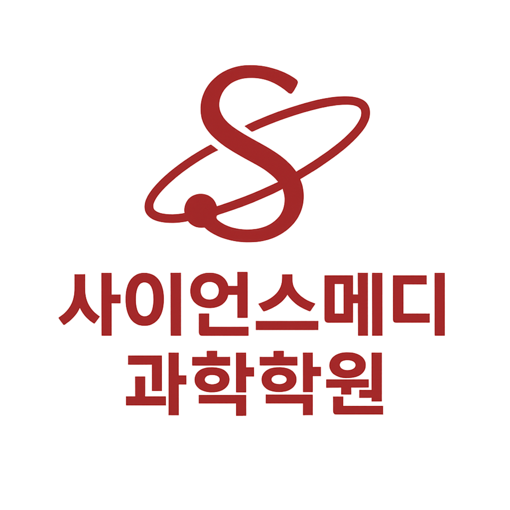

Programs
설명 → 적용 → 서술, 그리고 누적 테스트로 복습 루프를 고정합니다.
단원 핵심 개념을 “그림/도표/정의”로 정리하고, 오개념을 바로 교정합니다.
대표 유형을 ‘풀이 루트’로 만들고, 변형에 흔들리지 않게 고정합니다.
원인–과정–결과 / 자료해석 / 실험설계 답안 틀을 반복 훈련합니다.
Management
수업이 끝나면 ‘오늘의 치료 기록’을 남깁니다. 숙제/테스트/오답/서술형을 누적으로 관리해, 공부가 끊기지 않게 합니다.
단원 핵심 정의 + 자주 실수하는 포인트
대표 유형 풀이 흐름(조건→개념→계산/해석)
원인–과정–결과, 표/그래프 해석 문장 구조